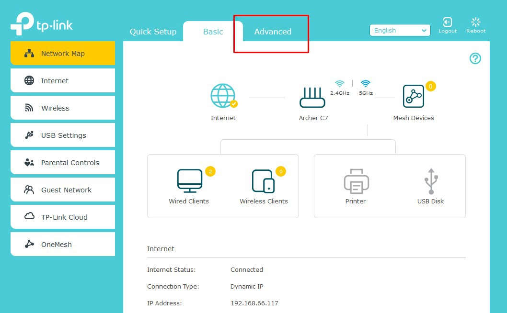
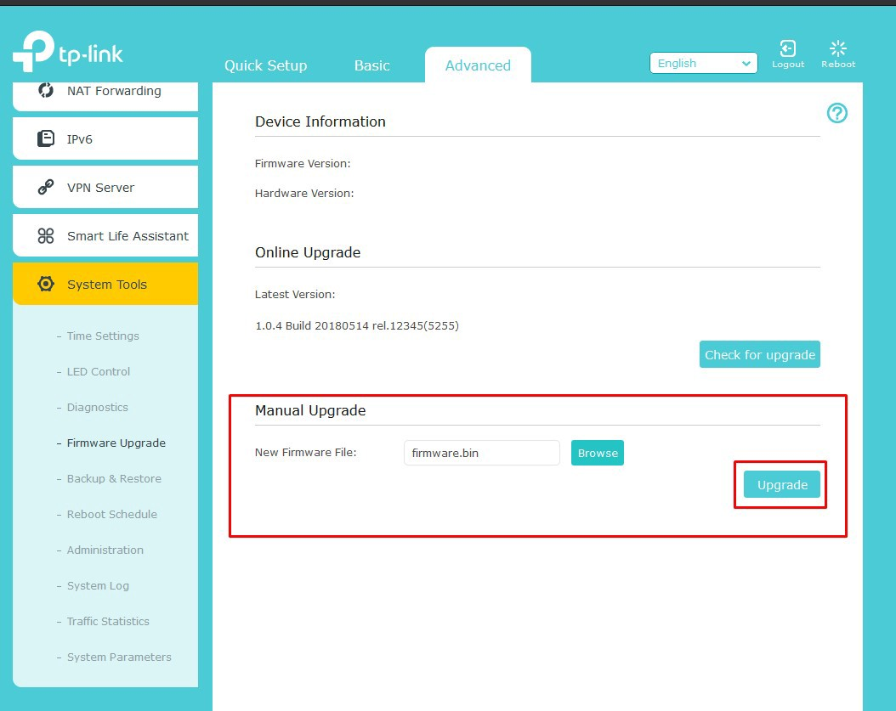

Install OpenWrt on the TP-Link Archer C7 V5 (2022). (12.03.2022)
The Technical Details
Techdata: TP-Link Archer C7 AC1750 v5
(If you don´t want to read all of this in short it means that the Router should have enough power to run current OpenWrt versions.)
The right Firmware Image
When installing OpenWrt for the first time you search for a Firmware image that looks like that:
tplink_archer-a7-v5-squashfs-factory.bin
After you have the right image you need to rename it to:
firmware.bin
Flashing the Firmware (Web interface Methode)
I am going to use the Web interface method because it is stable enough on my Stock firmware version.
Connect to the Router via Wifi and set up a Password. After that, you can connect with an Ethernet Cable and log in. (The Stock Web interface is located here: 192.168.0.1)
(The Images Below are from the TP-Link Emulator)
You just need to go to Advanced > System Tools > Firmware Upgrade Step 1: 
Step 2:

Then select the firmware.bin and click on upgrade. This process can take up to 5 Minutes. Step 3,4 and 5: 
After that, you just need to go to http://192.168.1.1 and there is the Web interface.
The OpenWrt Webinterface LuCI:

archive
The following links are archived versions, as the main ones could break.
https://openwrt.org/toh/hwdata/tp-link/tp-link_archer_c7_v5
https://downloads.openwrt.org/releases/21.02.2/targets/ath79/generic/openwrt-21.02.2-ath79-generic-tplink_archer-a7-v5-squashfs-factory.bin
https://emulator.tp-link.com/archer-c7-v5/index.html
Back to top